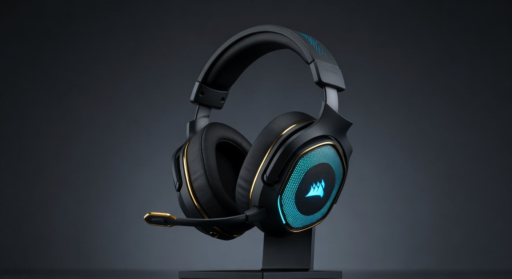
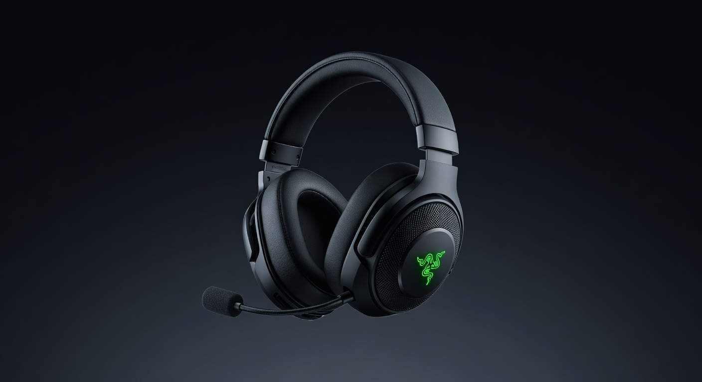
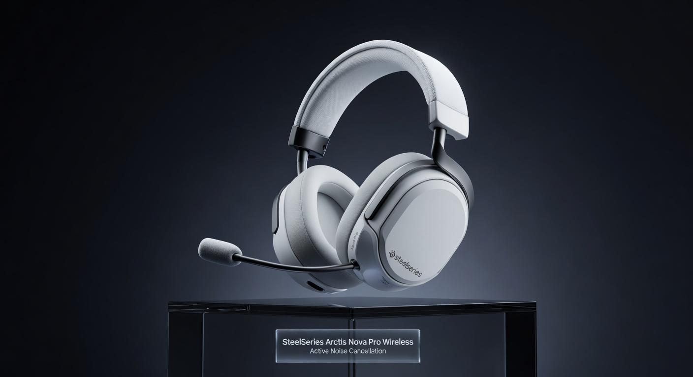

Best Gaming Headsets 2026: Top 5 Picks at Every Budget
A great gaming headset can transform your experience — clear footstep audio wins gunfights, good mic quality makes your team actually want to hear you, and comfortable ear cups mean you can grind a six-hour session without earache. We've researched the top options for 2026 and picked the five best across every price point, from a solid $50 entry-level option up to a premium $300+ wireless flagship. Here's exactly what we'd buy at each tier and why.
Jump to a Section
1. Best Budget Gaming Headset (~$50)

The HyperX Cloud Stinger has been a budget staple for years — and for good reason. The 50mm directional drivers punch above their price class, the swivel-to-mute mic is genuinely convenient, and the lightweight steel frame holds up to daily use. At $49 it's the easiest recommendation in gaming audio.
Pros
- Excellent value for $50
- Comfortable for long sessions
- Works on PC, PS5, Xbox, Switch
- Solid passive sound isolation
Cons
- Mic quality is basic (passable)
- No wireless option at this tier
- Minimal bass extension
2. Best Mid-Range Gaming Headset (~$100)

The Arctis Nova 3 hits the sweet spot at $100. SteelSeries' Nova drivers deliver a wide, accurate soundstage that's genuinely useful for positional audio in competitive games. The ClearCast bi-directional mic is one of the best you'll find under $150. The ski-goggle headband is oddly comfortable for hours of wear.
Pros
- Outstanding mic for the price
- Wide, accurate soundstage
- Extremely comfortable headband
- 7.1 virtual surround via Sonar app
Cons
- Wired only at this price
- Software required for EQ/surround
- Earcups can get warm
3. Best Value Wireless (~$150)

The Corsair HS80 delivers reliable 2.4GHz wireless with a battery life that exceeds the advertised 20 hours in practice. The sound profile leans slightly bass-heavy — good for immersive single-player games, acceptable for competitive play. The omni-directional mic is easily the best on this list for voice clarity.
Pros
- True wireless, no lag at 2.4GHz
- Excellent mic clarity
- Durable premium build
- Long battery life (20hr+)
Cons
- PC and PS5 only (no Xbox)
- Bass-heavy for competitive play
- iCUE software is heavy
4. Best Performance Gaming Headset (~$200)

The BlackShark V2 Pro is the headset that pro esports players actually use (or use derivatives of). The TriForce Titanium 50mm drivers split the driver into three zones for dedicated bass, mid, and treble — resulting in a wide, neutral soundstage that's ideal for hearing footsteps, reloads, and spatial cues in FPS games. 70-hour battery is exceptional.
Pros
- Neutral, competitive soundstage
- Dual wireless (2.4GHz + BT)
- 70-hour battery is exceptional
- Works on every major platform
Cons
- Detachable mic not the best
- No ANC (not needed for gaming)
- Bulkier than lighter competition
5. Best Premium Gaming Headset ($300+)

The Arctis Nova Pro Wireless is the pinnacle of gaming audio — it comes with a base station that enables hot-swap batteries, so you never have downtime. The active noise cancellation is the only ANC worth having in gaming headsets. The 10-band parametric EQ via Sonar software is deep enough for audiophiles. If you want the best money can buy and will actually use the features, this is it.
Pros
- Best sound quality on the market
- Infinite battery (hot-swap)
- Effective ANC for gaming
- Deep 10-band EQ controls
Cons
- Expensive (~$349)
- Requires base station (bulk)
- PC and PS5 only
- Overkill for casual gamers
Quick Comparison: Best Gaming Headsets 2026
| Headset | Price | Connection | Battery | Platforms | Best For | Buy |
|---|---|---|---|---|---|---|
| HyperX Cloud Stinger Gen 2 | ~$49 | Wired | N/A | All | Budget Entry | Amazon → |
| SteelSeries Arctis Nova 3 | ~$99 | Wired | N/A | All | Best Value Wired | Amazon → |
| Corsair HS80 RGB Wireless | ~$149 | 2.4GHz | 20hr | PC/PS5 | Best Wireless Entry | Amazon → |
| Razer BlackShark V2 Pro | ~$199 | 2.4GHz + BT | 70hr | All | Competitive FPS | Amazon → |
| SteelSeries Nova Pro Wireless | ~$349 | Dual + BT | ∞ (swap) | PC/PS5 | Premium / Best Overall | Amazon → |
Gaming Headset Buying Guide: What Actually Matters
Wired vs Wireless
Wired headsets have zero latency and never need charging. For competitive FPS where every millisecond matters, wired is still preferred by many pros. Wireless is worth it if you play on a couch or hate cable management — modern 2.4GHz wireless has latency so low it's imperceptible in practice.
Sound Quality: What to Look For
Ignore "7.1 surround sound" marketing unless it's hardware-based (it usually isn't). What matters for gaming is a wide stereo soundstage with accurate positional audio. A neutral, flat sound profile is better for competitive play. Bass-heavy headsets sound impressive but can mask footstep frequencies.
Mic Quality
Most gaming headsets in the $50–$150 range have acceptable but not great mics. If mic quality matters (streaming, Discord, team coordination), the SteelSeries Arctis line uses the best mic tech at any given price point. Detachable boom mics are generally better than flip-up designs.
Comfort for Long Sessions
Clamp pressure, ear cup material, and headband padding all affect long-session comfort more than most people expect. Velour ear cups breathe better than pleather but provide slightly less sound isolation. If you play 4+ hour sessions regularly, prioritize comfort as highly as sound quality.
Compatibility
Most wired headsets with a 3.5mm jack work on any platform. Wireless headsets are more restricted — check if your headset supports your console. The Razer BlackShark V2 Pro is one of the few wireless headsets that supports all major platforms.
More Gaming Gear Guides
- Best Gaming Mouse 2026 →
- Best Budget Gaming Chairs (Under $200) →
- FPS Calculator — See What Your Rig Can Handle →